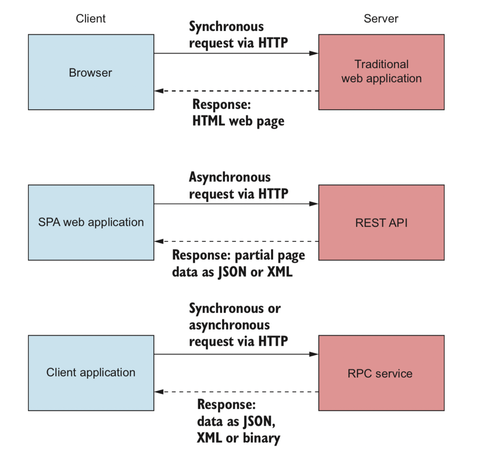

ASP.NET CORE可以作为服务器端应用程序，用于各种不同的应用程序客户端：它可以为传统的Web应用程序提供HTML页面，可以充当客户端SPA应用程序的REST API，或者可以充当客户端应用程序的临时RPC服务。
主要和次要版本的ASP.NET Core框架，为期三年，而且，由于所有开发都是公开进行的，因此有时您可以从一般社区以及直接从Microsoft获得问题的答案。在决定是否使用ASP.NET Core时，需要考虑两个主要方面：是否已经是.NET开发人员，以及是否要创建新的应用程序或希望转换现有的应用程序。
如果您刚接触.NET开发
如果您刚接触.NET开发，并且正在考虑使用ASP.NET Core，那么欢迎您！微软正在将ASP.NET Core推向Web开发初学者的一个有吸引力的选择，但是采用.NET跨平台意味着它可以与许多其他框架竞争。与其他跨平台Web框架相比，ASP.NET Core具有许多卖点:这
- 是一个现代的，高性能的开源Web框架。
- 它有着像其他语言一样的模型.
- C＃是一种很棒的语言（或者您可以根据需要使用VB.NET或F＃）。
- 您可以在任何平台上构建和运行。
ASP.NET Core是对ASP.NET framework重新构建，他是在新的.NET Core平台之上根据现代软件设计原则构建的。尽管从某种意义上说是新的，但.NET Core却已经从成 稳定和可靠的.NET Framework中吸取了很多东西，该框架已经使用了十多年，您可以放心，选择ASP.NET Core和.NET Core您将获得可靠的平台以及功能全面的Web框架。 当今可用的许多Web框架都使用类似的，完善的设计模式，而ASP.NET Core也不例外。例如Ruby on Rails因其使用Model-View-controller（MVC）模式而闻名。Node.js以使用小型离散模块（成为管道）处理请求的方式而闻名。依赖注入可以在各种各样的框架中找到。如果您熟悉这些技术则应该很容易的将他们转移到ASP.NET Core。如果您不熟悉他们，那么您可以期待试用行业最佳实践！
注意：您将在第4章遇到MVC在第3章中遇到管道，在第10章中遇到依赖注入。
.NET开发的主要语言（尤其是ASP.NET Core）是C#.这种语言有大量的追随者，这是有充分理由的！作为一种面向对象的基于C的语言，他为使用C，Java和许多其他语言的用户提供了熟悉的感觉。此外，他还具有许多强大的功能，例如语言集成查询（LINQ），闭包和异步编程构造。C#语言也在GitHub上公开设计，微软的C#编译器代码为Roslyn3也是如此。
注意：这本书，我将使用C#,并将重点介绍他提供的一些较新功能，但我不会从头开始讲授该语言。如果您想学习c#,我推荐Jon Skeet（Manning 2008）。
ASP.NET Core和.NET Core的主要热点之一是能够在任何平台上开发和运行的能力。无论您使用的是Mac.Windows还是Linux，都可以运行相同的ASP.NET Core应用并在多个环境中进行开发。作为Liunx用户，支持多种发行版（RHEL,Ubuntu，debian,centos,Fedora和openSUSE）,因此您可以确信选择的操作系统将是一个可行的选择。为了使ASP.NET Core能够在小型Alpine发行版上运行，以将其真正紧凑的部署到容器，甚至正在进行运行着的。